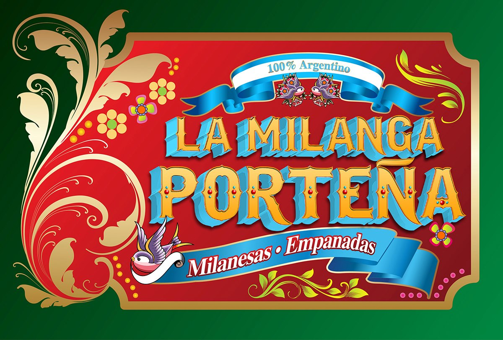
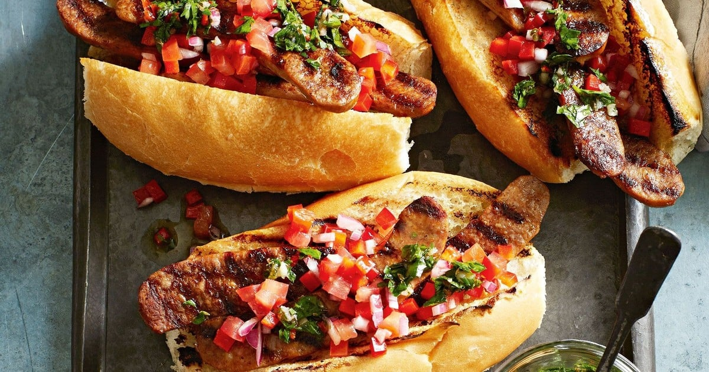
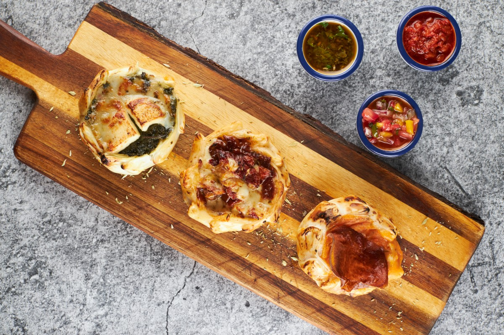
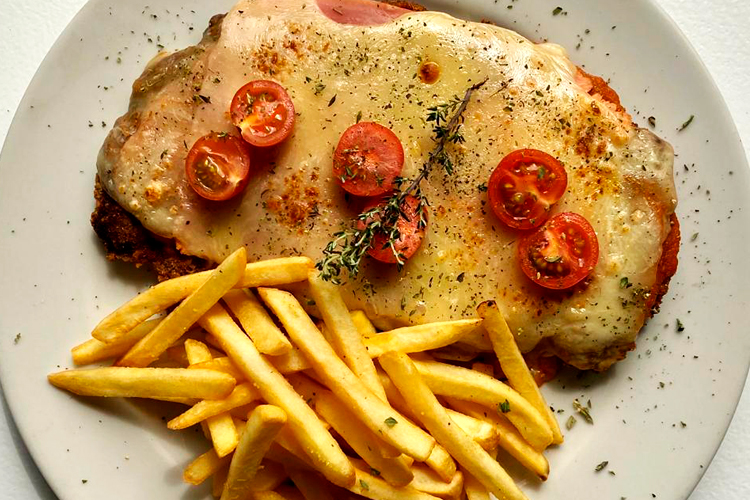
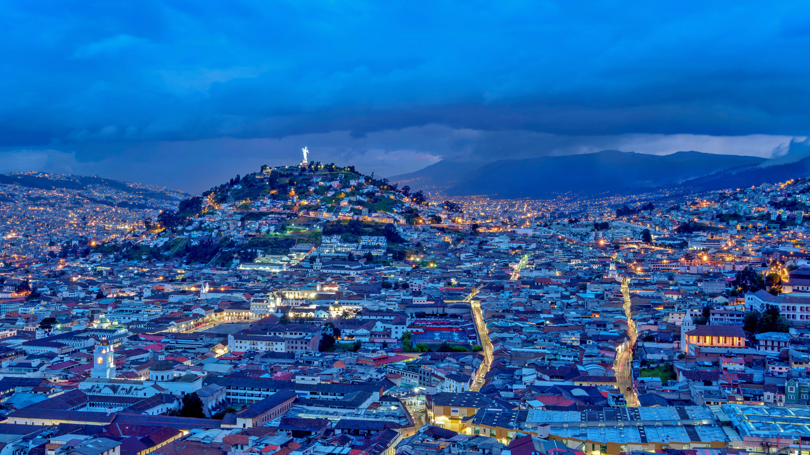
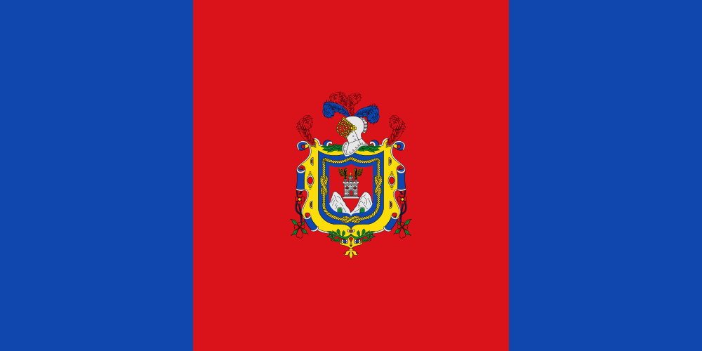

La Milanga Porteña
Nuestro Menú
Para tomar algo
Donde estamos
Mandanos un mail
Prueba nuestras milangas
Contactanos
Nuestro Menú
Para tomar algo
Donde estamos
Mandanos un mail
Prueba nuestras milangas
Contactanos
Entrantes (Recomendados)
Empanadas
Canastas
Sandwiches (con Papas Fritas)
Pizzas
Cortes de Carne
Hamburguesas
Choripan
Milanesas
Postres
Milanesa
al caballo
Choripan
Canastas
Milanesa Napo
Moscow
Mule
Mojito
Tropical
Fernet
Mule
Campari
Naranja
En la Milanga Porteña podrás degustar una amplia variedad de bebidas y Cocteles
más iconicos del pais. En nuestra carta podrás encontrar un gran catalogo de cocteles hechos a base
de Fernet, como por ejemplo "El Soplado Cordobes", "Fernet Mule", "Fernet Panky" entre otros. Si vienes a
nuestro bar, debes probar uno de estos. El Fernet se trata de una bebida de origen
italiano, que fue llevada a Argentina por una gran oleada de inmigrantes
italianos al principio del siglo XX. Su fama se debe a que en los años 80
se popularizo tomarlo con cola y a sus origenes como bebida digestiva. A parte del
Fernet, contamos ademas con cocteles más clasicos, asi como "Margarita", "Mojito",
"Daiquiri" y el "Negroni". Si eres más de clásicos, puedes optar por Wisky, Gines o Cervezas.
Ademas tenemos una carta de vinos amplia, pudiendo elegir entre distintas
uvas como "Malbec" y "Cabernet".
El bar se encuentra en el mismo establecimiento que el restaurante.
Los dias jueves y viernes de 18:00 a 21:00 tenemos promociones especiales: un
4x3 en cerveza nacional, micheladas con cerveza nacional y cocteles de la casa.
Asi como "Happy Hour" los miercoles de 19:00 a 22:00 donde disponemos
de 3x2 en TODOS los cocteles.
Quito, oficialmente San Francisco de Quito, es la capital de la República del Ecuador,
de la Provincia de Pichincha y la capital más antigua de América del Sur.
Es la segunda ciudad más poblada de Ecuador.Está ubicada sobre la hoya de Guayllabamba,
en las laderas occidentales del estratovolcán activo Pichincha,
en la parte oriental de los Andes a una altitud promedio de 2850 metros.
La ciudad está dividida en treinta y dos parroquias urbanas y
treinta y tres parroquias rurales. Quito es el epicentro cultural de Ecuador.
Somos una empresa familiar radicados en Ecuador desde 2012. Nuestra idea fue,
tomar un plato clásico, y muy popular Argentino: Milanesas y empanadas, hacerlo
innovador y a partir de ahí crear distintas versiones, combinar sabores e ingredientes,
con distintas salsas y guarniciones. Hay muchas razones para creer en aquella frase que algunos gauchos repiten:
“cuando un argentino te hace una milanesa, es porque realmente te quiere”.
El Panecillo
Bandera Quito
